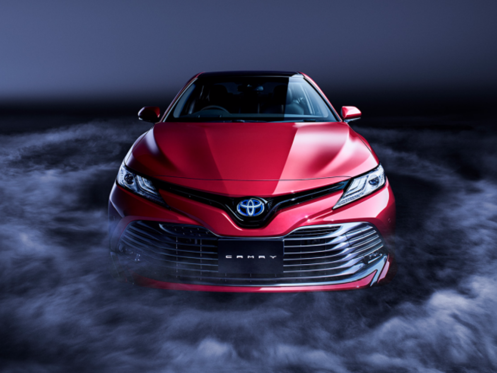

Jakarta, 25 Februari 2026

Tampilan depan Toyota Camry terbaru dengan desain elegan dan modern.
Toyota kembali memperkenalkan sedan andalannya, Toyota Camry, dengan tampilan yang semakin elegan dan futuristik. Desain grille depan yang besar dipadukan dengan lampu LED tajam memberikan kesan sporty namun tetap mewah.
Mobil ini dikenal sebagai kendaraan premium yang sering digunakan oleh kalangan eksekutif. Interiornya dilengkapi dengan jok kulit, layar sentuh besar, sistem hiburan modern, serta fitur konektivitas smartphone.
Dari sisi performa, Toyota Camry hadir dengan pilihan mesin bensin dan teknologi hybrid yang lebih ramah lingkungan serta hemat bahan bakar. Sistem keselamatan canggih seperti ABS, Vehicle Stability Control, hingga airbag lengkap semakin menambah keamanan berkendara.
© 2026 Portal Berita Otomotif Indonesia